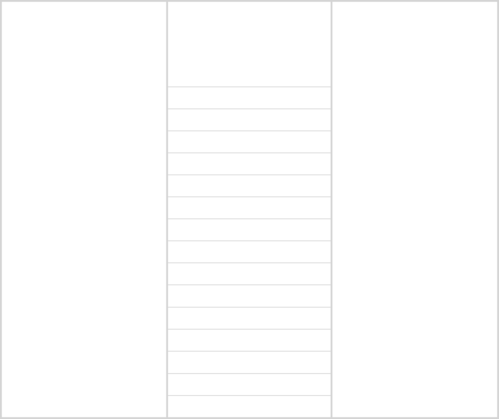
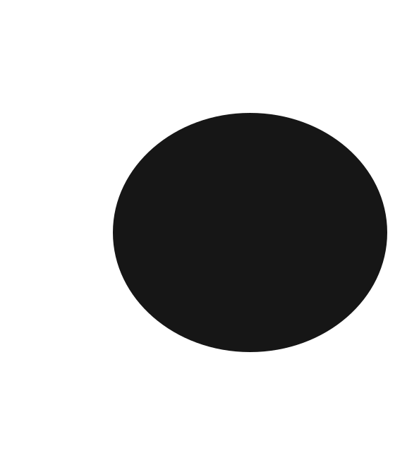
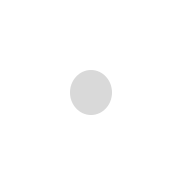
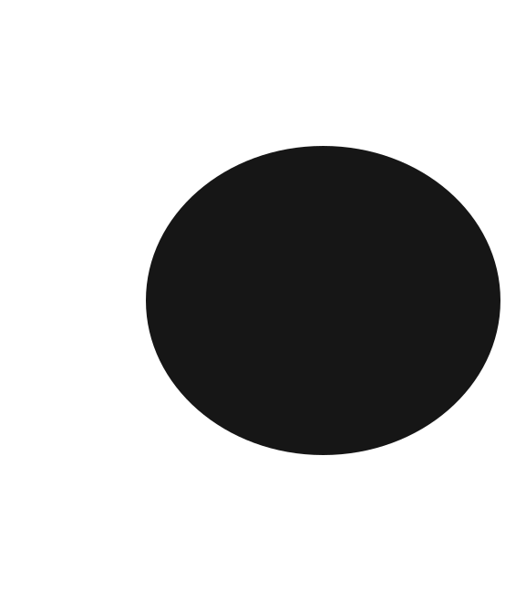
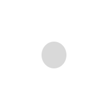
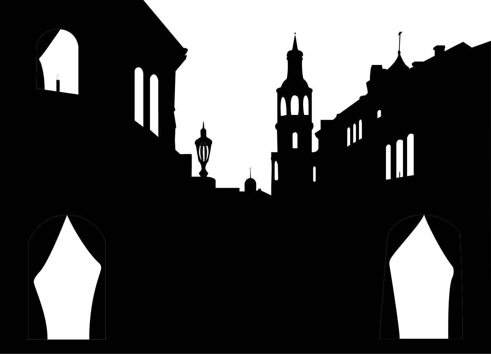
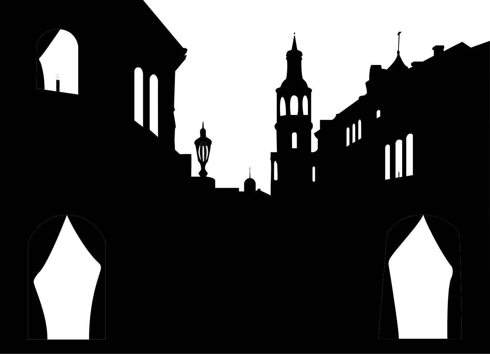

Театр теней в Москве
История театра теней
Изначально теневые спектакли
в России появились во время
правления Екатерины II.
Они давались в кругу дворян
и интеллигенции, а первые
представления на публике стали
устраивать известные художники.
В 1944 году в России появился
первый профессиональный театр
теней — Московский детский
театр теней.
Его основательницами стали
Екатерина Зонненштраль
и Софья Свободина.



О ТЕАТРЕ
АФИША
АКТЁРЫ
До конца 50-х годов театр работал
только с проекционной куклой,
дающей на экране чёрный силуэт,
а в выборе репертуара опирался
на произведения зарубежной
и русской классической литературы.
От актёров требовалось освоение
кукловождения, так как большинство
ранее играли в драматических театрах.
Мастерами этого искусства становились
постепенно, создавая всё более сложные
спектакли по мере развития театра.
Среди актеров первого поколения
следует отметить И.Бейдера, А.Скалыгу
С.Омирова, О.Лукину, А.Доброгорскую,
Ю.Рубинова, И.Кочеткова, А.Кострова,
К.Тульскую, Г.Лапшина, Н.Смажиневич,
А. Новикова, Е.Селезнева, Ю.Яковлева,
С.Гальперин, В.Гарбузова, Н.Мдивани,
Н.Михайлову, В.Макарова, С.Терскую.
Old Standard TT был создан
российским дизайнером Алексеем
Крюковым в 2008 году, шрифт
имеет три начертания
Он хорошо подходит для научных
работ по гуманитарным наукам,
так как ассоциируется
с классической литературой.
1 октября
2 октября
3 октября
4 октября
5 октября
6 октября
7 октября
8 октября
9 октября
10 октября
11 октября
12 октября
13 октября
14 октября
15 октября
19:00
21:00
19:00
20:00
21:00
19:00
19:00
20:00
18:00
19:00
18:00
19:00
19:00
21:00
20:00
«Русалочка»
«Палата №6»
«Бедные люди»
«Огниво»
«Метель»
«Студент»
«Сорока-воровка»
«Снежная королева»
«Руслан и Людмила»
«Зеленая птичка»
«Король-олень»
«Дикие лебеди»
«Ворона и лисица»
«Гадкий утенок»
«Медный всадник»
 





 
